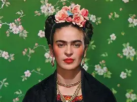

Leonardo da Vinci
Además de experimentar con diversos medios, Leonardo da Vinci también concibió formas revolucionaras de crear composiciones impactantes. De hecho, su característica composición triangular todavía se usa hoy en día y es ampliamente considerada como uno de los diseños de pintura más agradables visualmente. También fue uno de los primeros defensores del estudio de modelos anatómicos para perfeccionar su arte, algo que era ilegal en ese momento.
Aunque se le considera un artista legendario por pinturas como la Mona Lisa y La última cena, da Vinci pintó relativamente poco; solo hay unas 17 obras sobrevivientes que se le pueden atribuir.
Miguel Ángel
Aunque Miguel Ángel probablemente se veía a sí mismo como un escultor, su lugar en esta lista celebra su ingenio. Si bien sobreviven pocas pinturas de Miguel Ángel, las que aún podemos ver están entre las mejores de la historia. Su habilidad para dominar rápidamente la pintura al fresco y llevarla a nuevas alturas es evidente tanto en el techo de la Capilla Sixtina como en El juicio final, que sigue inspirando a los artistas hoy en día.
Diego Velázquez
Nacido en Sevilla, España, Diego Velázquez tuvo una carrera increíblemente exitosa que lo convirtió en uno de los pintores más destacados del Siglo de Oro español. Gran parte de su producción artística se relaciona con su trabajo como pintor de la corte del rey Felipe IV, un puesto que ocupó por casi 40 años. Su estilo individualista lo distinguió de otros pintores barrocos, y sus pinceladas sueltas eventualmente inspirarían tanto a pintores realistas como impresionistas.
Artemisia Gentileschi
Esta figura clave de la pintura barroca también fue una de las primeras artistas mujeres en tener éxito. A lo largo del siglo XVII, Artemisia Gentileschi creó pinturas dinámicas y explosivas con su característico uso del claroscuro y una paleta vibrante. A pesar de que su arte a veces era opacado por su contemporáneo, Caravaggio, su destreza y su rol en la historia del arte femenino han comenzado a recibir la atención que merecían desde un principio.
J.M.W. Turner
El pintor romántico J.M.W. Turner es conocido como un precursor del arte moderno. Con orígenes en la pintura tradicional neoclásica, Turner comenzó a luchar por el realismo en su trabajo, un enfoque prácticamente desconocido en ese momento. A través de miles de acuarelas y pinturas al óleo, experimentó con la luz, el color y el pincel. Incluso trabajó en sus pinturas al óleo al aire libre, algo que luego influiría en los impresionistas.
Vincent van Gogh
Aunque hoy es visto como uno de los pintores más influyentes del arte occidental, Vincent van Gogh no tuvo éxito comercial durante su vida. Sin embargo, desde principios del siglo XX, sus expresivas pinturas han cautivado al mundo del arte. Llenas de pinceladas dramáticas y colores llamativos, la obra de este pintor postimpresionista es una hoja de ruta hacia el arte moderno. La obra de Van Gogh, en particular La noche estrellada, sigue siendo tan emblemática que hoy se celebra en forma de instalaciones inmersivas y se recrea con tecnología de drones.
Pablo Picasso
Con una amplia carrera que en la que experimentó con múltiples estilos y produjo más de 20,000 obras, Pablo Picasso es sin duda uno de los nombres más reconocidos en el arte occidental. Su papel en el despunte del cubismo sería suficiente para consolidar su estatus en los libros de historia; sin embargo, Picasso hizo mucho más. Este pintor español es conocido por mostrar cómo el arte clásico puede ser dominado, y luego manipulado, para convertirse en algo nuevo, fresco y moderno.
Frida Kahlo

Sus íntimos y emotivos autorretratos, así como la celebración de su patrimonio cultural, son solo algunas de las cosas que hacen de Frida Kahlo una de las más grandes figuras del siglo XX. Aunque actualmente Frida Kahlo se ha convertido es una especie de ícono de la cultura pop, esto no debería eclipsar su gran habilidad como pintora y sus innovaciones para llevar la cultura mexicana a un público más amplio. Sus autorretratos –profundamente personales– también apuntan a una nueva dirección para los artistas modernos, donde el arte consistía en expresar emociones internas en lugar de intentar complacer a un coleccionista o mecenas.